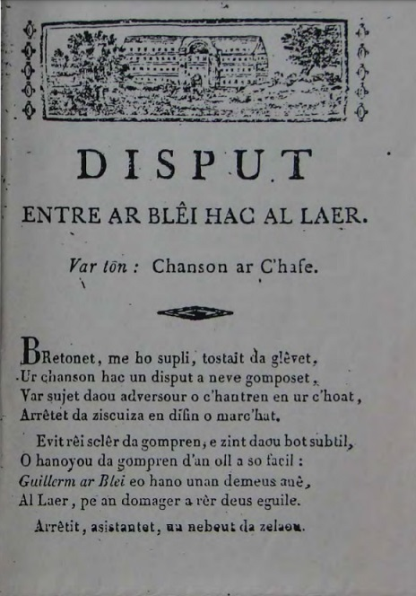

A propos de la mélodie:
Ce chant appartient à la catégorie des "disputes". La présente mélodie est celle de la "Dispute entre un marin et sa maîtresse" (Disput etre ur martolod hag e vestrez) dont le collecteur Ifig Le Troadec qui l'a publiée dans ses "Carnets de route" en 2005 (p. 335-337) nous apprend qu'elle est "un standard connu de nombreux chanteurs. Elle est typique des chansons sur feuilles volantes et a dû être composée entre
les deux guerres ou au tout début du XXe siècle. Les chanteurs la chantent toujours sur le même air".
En fait le poèmechez Ifig Le Troadec se compose de 2 octosyllabes suivis de 2 vers de 13 pieds et chez La Villemarqué de quatrains ou de distiques de 8 pieds ce qui oblige à chanter des groupes de 2 ou 3 voyelles sur certaines notes.
A propos du texte
Il existe toutes sortes de "disputes":
- Entre le loup et le voleur
- Entre le savetier et le sabotier
- Entre le marin et le laboureur etc.
Ce sont toujours de longues pièces composées de strophes de 4 lignes, la longueur du poème correspondant à une page de colportage complète.
La présente "Chanson du veuf" cherche un effet comique en mettant dans la bouche d'une fillette de 12-13 ans des propos qui sièraient d'avantage à une femme d'âge mûr qui connaît tout de la vie.
L'auteur en est François Le Cavalier de Merlevenez (Lorient), le héros éponyme de la
chanson précédente.
About the melody:
This song belongs to the category of "disputes". This melody is that of the "Dispute between a sailor and his mistress" (Disput etre ur martolod hag e vestrez) whose collector Ifig Le Troadec who published it in his "Carnets de route" in 2005 (p. 335- 337) tells us that it is "a standard known to many singers. It is a typical broadside song and must have been composed between WWI and WWII or at the very beginning of the 20th century. The singers always sing it to the same tune. ".
In fact the Ifig Le Troadec poem is made up of 2 octosyllables followed by 2 verses of 13 feet, while the song recorded by La Villemarqué consists of quatrains or distiches of 8 feet which implies that groups of 2 or 3 vowels should be sung on certain notes.
About the text
There are many kinds of "disputes":
- Between the wolf and the thief
- Between the cobbler and the clog maker
- Between the sailor and the plowman etc.
They are always long dialogues composed of stanzas of 4 lines, the length of the poem corresponding to a complete hawking page.
This "Widower's Song" seeks a comedic effect by putting into the mouth of a 12-13 year old girl speeches that would seem more like a mature woman who knows everything about life.
The author is François Le Cavalier of Merlevenez (Lorient), the eponymous hero of the
previous song .
BREZHONEK
SON AN INTAÑV
p. 49
1. Plac'h Guillou Ar Born a lare
Dhe zad ur gwener er beure ;
Plach
2. Bremañ hervez a zeblant din
Me a zo gouest da arboelliñ;
A vloavezhoù am-eus daouzek
Ha gant un all me ray trizek.
3. Me ya da chont me maneroù,
Ha pezh ne'z oun me a zesko.
Paotr kozh
4. Ma merch chwi ' zerro din ho peg,
Rak me a renk kaout ur chwreg.
Kaout ur chwreg dam servijiñ
Ha goude-se choazh dho teskiñ.
Plach
5. Ma zad, mar ne'd och ket 'vid pad
Kemer't un all a well-marchad.
Er vro-mañ zo kalz a verched
Ha ne goustont ket daou-chant skoed.
p. 50
Paotr kozh
6. Lennet am-eus e-barzh em buhez
Penaos 'm-bo grweg beteg ma bez
Ha ma ne bad ket he chrochen
Me lakay hi n un all ouzhpenn.
Plach.
7. Taolit pled ma zad, 'n ho archant
Na brenfech anken ha tourmant.
Kañfard a ve(z)et d'eus ar beure
A vefet skuiz d'an abardaez.
Paotr kozh
8. An amourousted barzh em gwad,
Ne baouez ouzh me harlinkat,
Hag em penn ez eus un avel
Ret vo din kaout ur "vozogel". (deirvet gwreg)
Plach
9. Ma zad evit ho taou chant skoed
Ho-pije ac'hanon kouentchet.
Hag am-bijemp kenkoulz kentel
Evel digant ar vozogel.
Paotr kozh
10. Petra dalv deoch terriñ va fen?
Kemero plac'h Fañch Riwalen.
Ma laro n dud barzh er vro-mañ
Sed aze daou chant skoed prenañ.
p. 51
Plach
11. Ar chalonioù pa vint koñtant
Na choulont nag aour nag archant.
Seul vui a goust '-po di(z)onti
Seul vui distroint anezhi
Paotr kozh
12. Em chalon zo ur barr-amzer
Hag empenn...
Plach
13. Pa vez ar spern er bleuñv, ma zad,
Int a ro din-me chwezhioù mat.
Ha pa ve ret o manevriñ
O-deus piket meur-a-hini.
Paotr kozh
14. Me a zo heñvel ma buhez
Ouzh ar pin pe ouzh al lore:
E bep amzer e fleurisont
Kerkoulz er goañv evel en hañv.
p. 52
Plach
15. Chwi ma zad e vezo gwelet
War benn ho taoulin er vered.
O c'huanadiñ, o ouelañ,
O krial dho chwragez kentañ.
Paotr kozh
16. Paeet am-eus hoch obido (obitus)
Hag echu-mik eo ar chañvioù ;
Bremañ, pezh a jom em amzer,
Gant ar re vev em-eus d'ober.
Plac'h
17. Ma zad, chwi a ouzoch ervat,
Och-eus da dreinañ kalz en oad,
Ha choazh och-eus digajamant,
Da gemeret ur plach yaouank.
Paotr kozh
18. Chwi deu ma merch, d'en-em dromplañ,
Pa soñjit ho tisiritan. (gw. Jakez [?])
Me gav ganin n deiz-a-hirie
Kaout ma lod a gapasite
Plach
19. Kalz a dud o-deus bet glachar
O re fiout en o fouar,
Yaouankiz a zo bet tizhet,
Ha perak kozhni na vez ket?
p. 53
Paotr kozh
20. Re emaomp bet en-em lezet,
Dindan gourchemen ar merched ;
Bremañ kaer am-euz differiñ,
Me n'on ket 'vit 'n-em venajiñ.
Plach
21. Ral eo an nep a ren ar bed
Hep santout an amourousted,
Ha dre nerzh dont dhe emgannañ,
Hi a zeu d'en-em neubeutañ.
Paotr kozh
22. Kement en-deus poan barzh ar bed
N'en-deus ket ar memes c'hleñved.
Mes ur glachar, 'vel ma hini,
N'ed eo ket tra aes da galmiñ (baoueziñ).
Plac'h
23. Ma zad, chwi a glevfoc'h bremañ
Strakal ho tivesker hep gannañ. .
Na reer memes dont da zoñjal.
Ober evel ma reer gwechall.
Paotr kozh
24. Me gred ez on dispartiet
Dimeus ma lod a habaskded,
Em gwazioù hag em izili
'Ma n amourousted ( an orged) o verviñ :
p. 54
Plach
25. Chwi ma zad a glask ur remed
Hag a zo kontrol dho kleñved.
E-lech dont dho remediañ
Hi a zeu dho tizeritañ.
Paotr kozh
26. Gwelet hoch eus balafennoù
Och ober an dro dar gouloù.
Div ha teir gwech hag i rostet,
Choazh en em bennont da vonet.
Plach
27. Re [ger eo c'hoari] ma larer
Ordinal a zo ha re ger
Gwelloch a zo heuliañ dison
Vit choari kontrol dar rezon.
28. Ar plached zo war an douar,
Vit reiñ plijadur ha glachar
Joaioù ' vez ouzh o chemeret,
Hag aliez anken pa vint bet.
p. 55
Paotr kozh
29. Larit din ar pezh a garet,
Evel ma'z on na chomit ket.
Ha pa 'm- be pinijenn goude,
Er stad ma 'z on me 'm-eus ivez.
Plach
30. Yaouank ha kozh e peur-vuiañ
Zo kustum dont den em yenañ.
Ur wech implijet ho tanvez
Larit "keno" dar garantez.
Paotr kozh
31. Ma lagad zo er femelenn
Vel hini c'hazh el logodenn
Ha me nam-bo nemet soñjoù,
A sammo o vont em memproù.
Plach
32. Bremañ, ma zad, me ho lezo,
Pa 'm-eus disklaeriet ma zoñjoù,
Mez chwi a welo goude-se
M' ho laret deoch ar wirionez. -
p. 56
33. Guillarm ar Born a lavare
Ti Ar Rozeg pa'n errue:
34. - Bremañ 'vit tremen ma anken
Me renk kavout ur femelenn.
E-barzh ma gwele ha pa'z ean,
Ma amzer gwechall a glaskan. -
35. Pipi Rozeg pa'n eus klevet,
Raktal n e zav a zo savet.
36. - Me zo amañ, me an hini,
Hag a zo gouest dho timeziñ.
Me zo ar vazh-amourousted,(1)
Biskoazh war den n'emaon manket. -
Fanch ar chavalier euz a Verlevenez,
labourer douar hag hostis. 51 bloaz.
(1) ar vazh-valan
KLT gant Christian Souchon (c) 2021
TRADUCTION FRANCAISE
CHANSON DU VEUF
p. 49
1. A Guillaume Le Born sa fille
Disait, un vendredi matin: ;
La fille
2. Moi, faire des économies
J'en suis capable, je crois bien;
Douze années que je suis sur terre:
J'en aurai treize l'an prochain.
3. Vous savez ce que je sais faire,
Le reste je l'apprendrai bien.
Le veuf
4. Ma fille assez de bavardage:
C'est une épouse qu'on me doit.
Qui ferait, outre mon ménage
Votre éducation, de surcroît.
La fille
5. Si cela ne peut pas attendre
Prenez-en une à bon marché.
Ici des femmes sont à vendre:
Deux cents écus, c'est cher payé
p. 50
Le veuf
6. Jusqu'à ce que je rende l'âme
Ai-je lu, je serai marié.
Si ce n'est pas la même femme,
C'est parce qu'elle aura mué.
La fille,.
7. Il se peut que votre or n'achète
Que de la peine et du tourment.
Le coq du matin que vous êtes
Peut le soir être sur le flanc.
Le veuf
8. L'amour qui mon sang émoustille
Ne cesse de me chatouiller,
Le vent bat mes tempes, ma fille,
Je dois à nouveau convoler (en troisième noce)
La fille
9. Deux cents écus: c'est ce que coûte-
rait mon entrée dans un couvent.
Où l'on est mieux instruit sans doute
Que par une belle-maman .
Le veuf
10. Cessez de me rompre la tête:
J'irai voir François Rivoalen:
J'aurai sa fille et les pipelettes
Reprendront ce chiffre: "Deux cents!"
p. 51
La fille
11. L'argent, l'or sont-ils nécessaires
Au bonheur des futurs époux.
Plus la vie que l'on mène est chère
Plus vite l'on en voit le bout.
Le veuf
12. Dans mon coeur règne la tempête
Tout autant que dans mon cerveau...
La fille
13. Père songez à l'aubébine
En fleurs qui répand son parfum.
Songez combien elle égratigne
Quand on la prend à pleines mains.
Le veuf
14. Moi, l'arbre auquel je me compare
C'est le pin ou bien le laurier:
Qui d'un vert feuillage se parent,
Que ce soit l'hiver ou l'été.
p. 52
La fille
15. Mon père il faut qu'au cimetière
On vous voie prier à genoux.
Pleurer son épouse première
Est ce que doit un digne époux.
Le veuf
16. En matière de funérailles
Je suis quitte. Fini le deuil!
Désormais que tous mes soins aillent ,
Aux vivants, plutôt qu'aux cercueils!
La fille
17. Mais vous le savez bien, mon père,
Votre âge n'est pas avancé
Au point de bannir des critères,
Et la jeunesse et la beauté.
Le veuf
18. N'allez pas croire que je songe,
Ma fille, à vous déshériter
Je peux, si ma vie se prolonge,
Garder toutes mes facultés.
La fille
19. La présomption est de tout âge:
Plus d'un s'en est mordu les doigts,
Chez le jeune on sait ses ravages
Auxquels le vieux n'échappe pas.
p. 53
Le veuf
20. On ne fait que trop s'en remettre,
A l'avis des filles, vraiment ;
A quoi bon tarder? Je veux être
Remarié incessamment.
La fille
21. A-t-on vu gouverner le monde
A qui fait fi de l'affection?
La force sur quoi l'on se fonde,
Cède vite à l'inanition.
Le veuf
22. Ici-bas plus d'un est malade
Sans que tous aient les mêmes maux.
Moi, la carence qui m'accable
Ne se calme point de sitôt.
La fille
23. Mais vous verrez bientôt vos jambes,
Sans se battre, s'entrechoquer. .
Ce que l'on faisait en décembre,
On ne le peut plus en janvier.
Le veuf
24. Le peu que j'avais de patience,
Prenez-y garde, est épuisé!
Dans mes veines et dans mes membres
Je sens bien la sève monter.
p. 54
La fille
25 Vous cherchez, mon père, un remède
Qui sera pire que le mal.
Car au lieu de calmer sa fièvre
Il dépouillera l'animal.
Le veuf
26. Je sais, autour de la lumiére
Virevoltent les papillons.
Ils ont beau se brûler les ailes,
Encore et toujours, ils y vont.
La fille
27. Le jeu ne vaut pas la chandelle
Qui l'éclaire, souvent dit-on
Mieux vaut jouer pour se distraire
Que jouer contre la raison.
28. Les filles viennent en ce monde
Pour donner chagrin et plaisir
On a de la joie à les prendre
On souffre en les laissant partir.
p. 55
Le veuf
29. Vous parlez, vous parlez, ma chère:
A ma place vous n'êtes point.
Je souffrirai? La belle affaire,
Je souffre déjà comme un chien
La fille
30. Jeune ou bien vieux, il est d'usage
Que l'on tiédisse avec le temps.
Et à cours d'argent, le ménage
Voit fuir l'amour le plus souvent.
Le veuf
31. Je couverai de l'oeil les femmes
Comme un chat guette les souris
Et cette pensée, Dieu me damne,
M'empêchera d'être engourdi.
La fille
32. Mon père, il faut que je vous laisse
J'ai dit tout ce que je pensais,
Vous verrez vous peu, je l'atteste
Que je disais la vérité. -
p. 56
33. Voici que ce brave Guillaume
Chez Le Rosec vint ce jour-là:
34. - Ce qu'il me faut c'est une femme
Ou je vais crever, croyez-moi!
Quand le soir je rejoins ma couche,
Il me souvient du temps passé... -
35. Pierre Rosec ouvre la bouche
Pour ne jamais la refermer.
36. - Vous êtes à la bonne adresse
Comptez sur moi pour vous marier,
Seul entremetteur (1) sur la place
Qui ne se soit jamais trompé!
François Le Cavalier de Merlevenez,
paysan et hôtelier, 51 ans
(1) en breton "ar vazh-valan"
Traduction Ch. Souchon (c) 2021
ENGLISH TRANSLATION
THE WIDOWER'S SONG
p. 49
1. To Guillaume Le Born his daughter
Was saying, one Friday morning:
The girl
2. I can save money and barter
I'm capable of it, I think.
Twelve years I've been on earth, d'you hear?
And I will be thirteen next year!
3. You know what I can do. The rest
I will learn and I'll be the best
The widower
4. My daughter, enough of chatter!
I need a wife: end of chapter!
She will look after my household
She will raise you: the good's twofold!
The girl
5. Even if you're in a hurry,
Do not forget to be thrifty.
In this country women abound
Costing less than two hundred pounds.
p. 50
The widower
6. I must, with my fate to comply
Be married till the day I die.
If one did not last my whole life
I must needs get another wife.
The girl
7. Mind, father, that all your money
Wouldn't buy you pain and worry;
That, being a cock in the morning,
You're not panting in the evening.
The widower
8. Lust that titillates my rind
It doesn't stop tickling my brain,
And in my head there blows a wind
As long as I don't wed again (in third wedding)
The girl
9. Two hundred crowns: so much would cost-
My admittance to a convent.
To educate me they were lost
If to a stepmother they went.
The widower
10. No use of making things harder:
I'll take Fañch Rivoalen's daughter:
And let say the gossip in town:
"He bought her for two hundred crowns!"
p. 51
The girl
11. When hearts are happy together
They do not need gold or silver.
The more money in life you spend
The faster it comes to an end.
The widower
12. In my heart a storm is raging
Crushing in my brain everything.
The girl
13. Father, remember the hawbine
In bloom that spreads its smell so fine.
Well you know how its thorns scratch
When with your hands they come in touch.
The widower
14. The tree to which I would compare
Myself is a pine or cedar:
Green leaves are the stately hair
They keep in winter and summer.
p. 52
The girl
15. But people should see you, father
On your knees, praying on the grave.
Devotedly for your former
Wife, as a husband should behave
The widower
16. Regarding funerals and woe,
I am quit. All I owed is paid.
Henceforth all my care goes to
The living rather than the dead!
The girl
17. But well you know, my dear father,
Your age is not advanced that much
That you would no more consider
A pretty young woman as such.
The widower
18. Do not imagine that I plot,
Daughter, to disinherit you.
To the present day I did not
Give up my faculties, It's true!
The girl
19. Your strength you often overrate
At any moment of your age:
A rule that the youth illustrate,
And often at a later stage.
p. 53
The widower
20. Fathers too often abandon
Themselves to their own daughters' rule:
My search for a new companion
Shall not be delayed by a fool.
The girl
21. Rulers of the world have seldom
Closed their hearts to affection.
Strength unsustained by this "venom",
Quickly gives in to ruination.
The widower
22. All people on earth who are sick
Don't suffer from the same ailment.
My deficiency will not quick-
ly be cured without a treatment.
The girl
23. I fear you will soon see your legs
Clashing, though they don't mean to fight.
And you should remove from your head
Things you did still yesterday night.
The widower
24. The little quantum of patience
I had, beware, is exhausted!
In my veins and in my senses
Rises the sap quite unfrosted!
p. 54
The girl
25. ??You seek a remedy, father
That will be worse than the evil.
Instead of soothing its fever
It's apt to skin the animal.
The widower
26. Around the light as you know
Butterflies and moths fly around.
Again and again there they go
And no matter if they get burnt!
The girl
27. Games oft are not worth the candle
That enlightens them, people say.
You'd better for fun to handle
Than against common sense to play.
28. Girls to this world of ours have come
To deliver pleasure and grief.
Men have pleasure in taking them
And men suffer the day they leave.
p. 55
The widower
29. You may preach like a book my dear:
As long as you're not in my shoes
Lest I should suffer pains you fear?
I suffer from this present bruise
The girl
30. Whether young or old, usually
People's zeal cools as time goes by.
And once running out of money,
Couples often say love "goodbye".
The widower
31. I will keep an eye on women
Like a cat that's watching for mice
And all my thoughts will be for them, ,
Keeping me from turning to ice.
The girl
32. All I had to say I have said,
Father, I must be leaving you.
You will find very soon, I bet
That all I told you, it was true -
p. 56
33. Guillaume Le Born went straight away
To Le Rosec's that very day:
34. - To ease my pain, I need your aid
Would you find me a wife, my friend.
When in the night I lie in bed,
I brood over the time that's spent. -
35. Pierre Rosec who sat in his seat
Immediately sprang to his feet.
36. - To the right address you hurried:
Rely on me to get married.
I am the sole matchmaker (1) who
Does matches no one will undo! -
François Le Cavalier of Merlevenez,
farmer and innkeeper, 51 years old
(1) in Breton "ar vazh-valan"
Translated by Christian Souchon (c) 2021
NOTES

Un exemple de "Dispute": Entre le Loup et le Voleur
Feuille de colportage.